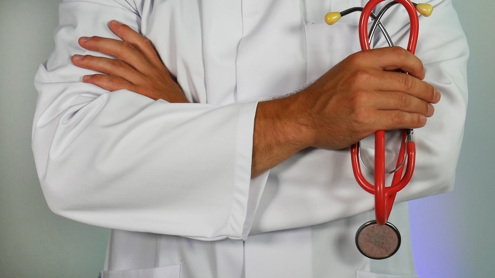
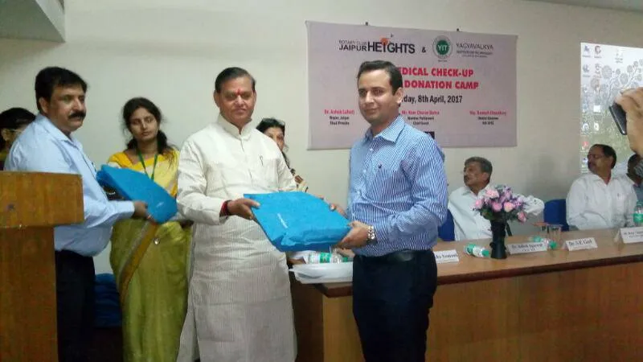

Post-Graduate Subspecialty Fellowship Program
The Department of Academic Orthopedics at Advance Orthopedic & Sports Injury Hospital (AOSIH), Jaipur offers premier hands-on clinical fellowships designed for aspiring joint replacement and arthroscopic surgeons. Under the direct mentorship of Dr. Naveen Sharma (MS Ortho KEM Hospital Mumbai, National Board / DNB Teacher, and ISAKOS Germany Fellow), fellows gain intensive exposure to cutting-edge techniques.


Program Tracks & Curriculum
1. Six-Month Clinical Fellowship (Arthroplasty & Arthroscopy)
Focuses on practical operative assisting, pre-operative digital templating, postoperative rehabilitation management, and outpatient clinical evaluations at AOSIH Jaipur.
2. One-Year Advanced Surgical Fellowship
Includes independent step-by-step case execution under senior faculty supervision, involvement in complex revision joint cases, scientific paper publication, and national conference presentation.
What Fellows Master During the Program


- Direct Anterior Approach (DAA) Hip Replacement: Patient positioning on specialized radiolucent tables, fluoroscopic verification of cup inclination and leg lengths, anterior acetabular exposure without muscle incision.
- Subvastus Total Knee Replacement: Soft-tissue balancing, extensor-mechanism preservation, kinematic implant alignment, and fast-track protocol execution.
- Anatomical ACL Reconstruction: Peroneus longus and hamstring autograft harvesting, transportal femoral tunnel drilling, and all-inside suspensory cortical button fixation.
- Shoulder Arthroscopy: Double-row rotator cuff repair, knotless suture anchor placement, and open/arthroscopic Latarjet coracoid transfer.
- Academic Research: Submission of clinical case series to peer-reviewed indexed orthopedic journals (Indian Journal of Orthopaedics, etc.).
Eligibility Criteria & Application Process
- Primary Qualification: Master of Surgery in Orthopedics (MS Ortho) or Diplomate of National Board (DNB Ortho) recognized by the National Medical Commission (NMC).
- Registration: Active medical registration with NMC or Rajasthan Medical Council.
- Selection: Based on curriculum vitae evaluation, academic merit, letter of recommendation, and personal/virtual interview with Dr. Naveen Sharma.
- Stipend: Competitive monthly stipend provided along with access to hospital academic library and conference travel grants.